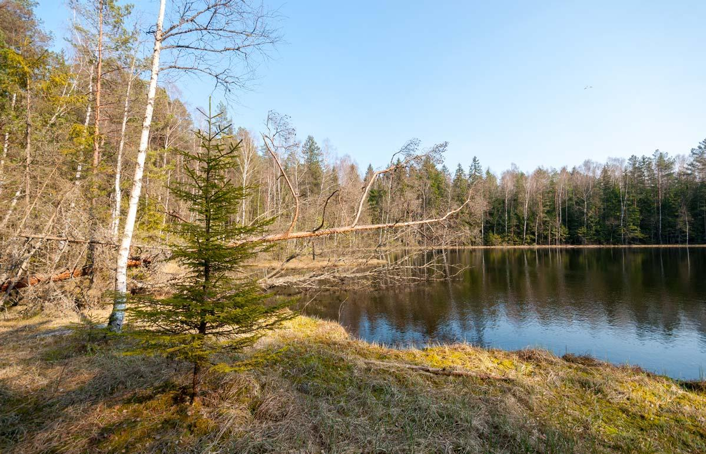

Эта экотропа не менее популярна, чем Ельня. Находится она на территории парка Нарочанский. Территория с холмами, а также с озерами Мертвое, Глубля, Глубелька и красивейшими лесами вокруг действительно впечатляет. Кроме этого, экотропа проходит мимо реки Страчи – это самая бурная река в нашей стране, а весенние сплавы на байдарках по ней очень захватывающие. Все это окинуть взглядом с высоты, как и на других тропах, можно будет на специальных смотровых площадках. На пути тебе будет встречаться и много мест, где можно передохнуть и перекусить. За посещение экотропы нужно заплатить 2 BYN. А если захочешь заказать расширенную экскурсию или покататься на велосипеде – нужно будет договариваться отдельно. Что еще посмотреть в окрестностях? Можно полюбоваться бескрайними просторами Нарочи. А еще есть вариант заехать на малоизвестный водопад в деревне Маньковичи Поставского района – до него около 45 км.
Мядельский район, Минская область
Расстояние от Минска: 170 км
Длина экотропы: 4-7 км